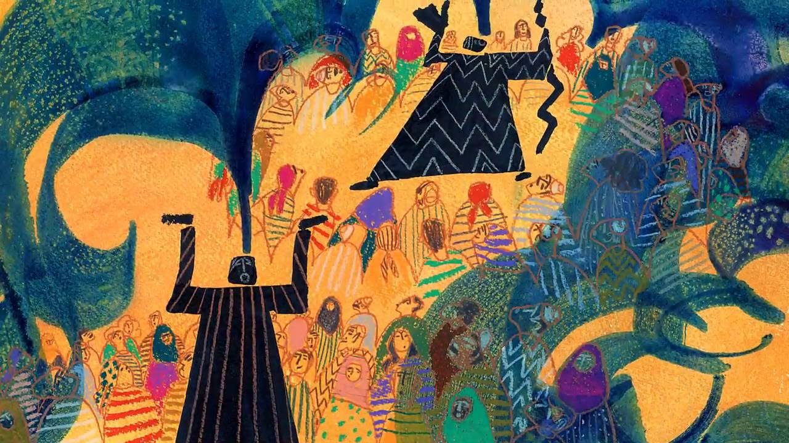

Telling my story
The story of our lives, for each of us, is not a movie or a book… at least not yet.It is a type of living memory that reacts and interacts with our present more often than we would like.
On being a Professional Storyteller
About 7 years ago, I noticed for the first time that one can be a professional storyteller. I remember precisely the feeling of amazement I had. At the same time, I had two thoughts: I said to myself that “it’s super cool and why haven’t I thought about it before!” - the first thought, “… but isn’t it total nonsense? You mean, aren’t we all storytellers? after all, what is this qualification?” - A second thought.
Space
Her rooms keep relationships, events, failures, and successes locked. We can open the door and see what is there at different times when the brightness of a bright morning or the darkness of a restless night makes us see clearly or grope.The past is made to support our future and guide our present - said someone who knew many stories.